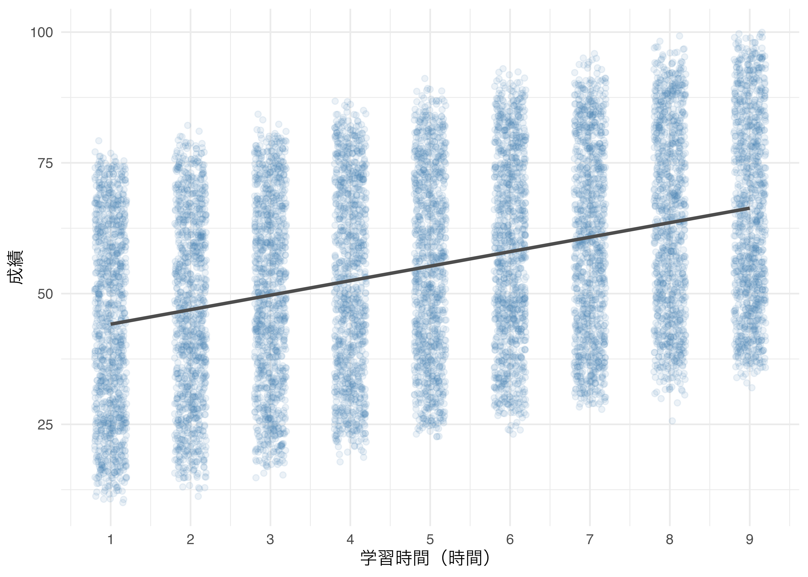

14 データ分析の流れ
R の復習と、5つのステップによるデータ分析
今日の目標
- 後期のスタートとして、RStudio・Rプロジェクト・Quarto の使い方を思い出す。
- CSV ファイルと Excel ファイルを読み込み、dplyr と ggplot2 でデータを扱えることを確認する。
- 前期第13回で学んだデータ分析の5つのステップを、もう一度一通り体験する。
今日の位置づけ
後期は、毎回与えられるデータについて自分で問いと仮説を立て、分析し、レポートにまとめる授業です。その土台になるのが、前期の最後に学んだ「5つのステップ」です。
今日は前半で R の基本操作を復習し、後半で前期第10回でも使った学生成績データを使って、5つのステップをもう一度通して体験します。
14.1 今日の準備
前期と同じ手順で、今日の作業用の R プロジェクトを作成します。
| 1. | RStudio を起動し、左上のアイコン（＋R）から新規 R プロジェクトを作成する（New Directory → New Project）。 |
| 2. | Directory name に「LessonB01」と入力し、Browse から Kドライブの「R_programming」を選んで Create Project をクリックする。 |
| 3. | Blackboard から Student_Performance.csv・Student_Performance.xlsx・assignmentB01.qmd をダウンロードし、「R_programming/LessonB01」フォルダに入れる。 |
| 4. | 講義資料のコードを試すときは、R Script（practiceB01.R）を新規作成して保存する。 |
この資料のコードは、データを data フォルダに入れた場合の書き方（"data/Student_Performance.csv"）になっています。プロジェクトの直下にデータを置いた場合は、read_csv("Student_Performance.csv") のように data/ を外してください。
14.2 パッケージの準備
大学の PC はシャットダウンするたびに初期化されるため、毎回インストールが必要です。
必要なパッケージを読み込みます。
14.3 今日使うデータ
学生成績データ（Student_Performance.csv）
学生 10,000 人について、学習時間や睡眠時間などの生活習慣と、成績の指標が記録されたデータです。前期第10回（回帰分析1）でも使いました。今回は変数名を短く整えたものを使います。
変数の説明
| 変数名 | 内容 | 種類 |
|---|---|---|
study_hours |
1日の学習時間（時間、1〜9） | 数値 |
previous_score |
前回のテストの点数（40〜99） | 数値 |
activities |
課外活動への参加（Yes / No） |
カテゴリ |
sleep_hours |
1日の睡眠時間（時間、4〜9） | 数値 |
practice |
解いた練習問題集の数（0〜9） | 数値 |
score |
成績の指標（10〜100、大きいほど成績が良い） | 数値 |
このデータは学習用に作られた（シミュレーションされた）データです。そのため、実際の調査データに比べて変数どうしの関係が非常にきれいに出ます。後期の総合分析演習で扱う実際のデータでは、ここまではっきりした結果にならないことが普通です。
14.4 R の復習
14.4.1 ファイルの読み込み（CSV・Excel）
CSV ファイルは、tidyverse に含まれる readr パッケージの read_csv() で読み込みます。
Excel ファイルは、readxl パッケージの read_excel() で読み込みます。readxl は library(tidyverse) だけでは読み込まれないので、library(readxl) が必要です。
読み込んだら、まず glimpse() で行数・列数・変数の型を確認します。
Rows: 10,000
Columns: 6
$ study_hours <dbl> 7, 4, 8, 5, 7, 3, 7, 8, 5, 4, 8, 8, 3, 6, 5, 2, 8, 6, 2…
$ previous_score <dbl> 99, 82, 51, 52, 75, 78, 73, 45, 77, 89, 91, 79, 47, 47,…
$ activities <chr> "Yes", "No", "Yes", "Yes", "No", "No", "Yes", "Yes", "N…
$ sleep_hours <dbl> 9, 4, 7, 5, 8, 9, 5, 4, 8, 4, 4, 6, 9, 4, 7, 4, 8, 7, 4…
$ practice <dbl> 1, 2, 2, 2, 5, 6, 6, 6, 2, 0, 5, 2, 2, 2, 8, 3, 4, 2, 9…
$ score <dbl> 91, 65, 45, 36, 66, 61, 63, 42, 61, 69, 84, 73, 27, 33,…読み込めないときの確認ポイント
- ファイルが R プロジェクトのフォルダ（または
dataフォルダ）に入っているか - ファイル名のつづり・大文字と小文字・拡張子（
.csv/.xlsx）が正しいか "で囲んでいるか
エラー 'data/Student_Performance.csv' does not exist は、「その場所にファイルが無い」という意味です。右下の Files ペインで、ファイルの場所を確認しましょう。
Rows: 10,000
Columns: 6
$ study_hours <dbl> 7, 4, 8, 5, 7, 3, 7, 8, 5, 4, 8, 8, 3, 6, 5, 2, 8, 6, 2…
$ previous_score <dbl> 99, 82, 51, 52, 75, 78, 73, 45, 77, 89, 91, 79, 47, 47,…
$ activities <chr> "Yes", "No", "Yes", "Yes", "No", "No", "Yes", "Yes", "N…
$ sleep_hours <dbl> 9, 4, 7, 5, 8, 9, 5, 4, 8, 4, 4, 6, 9, 4, 7, 4, 8, 7, 4…
$ practice <dbl> 1, 2, 2, 2, 5, 6, 6, 6, 2, 0, 5, 2, 2, 2, 8, 3, 4, 2, 9…
$ score <dbl> 91, 65, 45, 36, 66, 61, 63, 42, 61, 69, 84, 73, 27, 33,…行数は 10,000、列数は 6 です。CSV 版と同じデータなので、df_student と同じ大きさになります。
14.4.2 dplyr の5つの動詞
前期第2回で学んだ dplyr の5つの動詞を、パイプ |> でつなげて使います。
| 関数 | 働き |
|---|---|
filter() |
条件に合う行を取り出す |
select() |
必要な列を取り出す |
mutate() |
新しい列を作る・列を変更する |
arrange() |
並べ替える（desc() で降順） |
summarise() |
集計する（group_by() と組み合わせてグループごとに） |
例として、学習時間が9時間の学生だけを取り出し、成績が高い順に並べてみます。
- 1
-
学習時間が9時間の行だけを取り出す（
=ではなく==を使う）。 - 2
- 必要な列だけを取り出す。
- 3
- 成績が高い順に並べ替える。
# A tibble: 1,115 × 3
study_hours previous_score score
<dbl> <dbl> <dbl>
1 9 98 100
2 9 98 100
3 9 99 100
4 9 98 99
5 9 99 99
6 9 99 99
7 9 99 99
8 9 96 99
9 9 97 98
10 9 99 98
# ℹ 1,105 more rowsmutate() で新しい列を作ることもできます。ここでは、成績が60以上なら「合格」、それ以外は「不合格」とする列 pass を作ります。
# A tibble: 2 × 2
pass n
<chr> <int>
1 不合格 5710
2 合格 4290# A tibble: 9 × 3
study_hours n mean_score
<dbl> <int> <dbl>
1 1 1152 44.1
2 2 1085 46.4
3 3 1119 49.8
4 4 1085 52.7
5 5 1094 55.5
6 6 1133 58.5
7 7 1129 60.2
8 8 1088 64.2
9 9 1115 65.7学習時間が長いほど、成績の平均が高くなっています。
14.4.3 ggplot2 の基本
ggplot2 は「データ → 軸の対応（aes()）→ グラフの種類（geom_*()）→ ラベル・見た目」の順にレイヤーを重ねてグラフを作ります。
- 1
- x 軸に成績を割り当てる。
- 2
-
ヒストグラムを描く（
binwidthは棒の幅）。 - 3
- 軸ラベルを付ける。
- 4
- 見た目のテーマを設定する。

df_student を使い、課外活動の有無ごとの成績の箱ひげ図を描いてください。
ただし、以下の条件を満たしてください。
- x 軸を
activities、y 軸をscoreにする - 課外活動の有無で色分けし（
fill = activities）、凡例は表示しない - x 軸のラベルを「課外活動」、y 軸のラベルを「成績」にする

14.4.4 Quarto の復習
課題は Quarto ファイル（.qmd）に書き、Render して HTML を作成します。
- ファイルの一番上の
---で囲まれた部分が YAML ヘッダーです。author:に自分の氏名と学籍番号を書きます。 ```{r}で始まるグレーの枠（コード・チャンク）に R のコードを書きます。チャンクの外には、結果の説明や考察を文章で書きます。- 書き終えたら [Render] を押し、
assignmentB01.htmlができたことを確認します。 - HTML ファイルを右クリックして「圧縮（ZIP形式）」し、
assignmentB01.html.zipを Blackboard に提出します。
Render では、qmd ファイルの上から順にすべてのコードが実行し直されます。コンソールで動いていても、qmd ファイルの中に library() や read_csv() が書かれていなければエラーになります（前期第6回の「RStudio の R と Render 時の R は別物」を思い出してください）。
見出しや表、コールアウトの書き方は、前期第13回の「Quartoレポートの書き方」を参照してください。
14.5 データ分析の5つのステップ
ここからは、前期第13回で学んだ5つのステップに沿って分析を進めます。後期の総合分析演習のレポートも、この5つのステップで書きます。
| ステップ | 内容 | 主に使う関数 |
|---|---|---|
| 1 | 問い（RQ）と仮説を立てる | （文章で書く） |
| 2 | データの確認・前処理と記述統計 | filter(), select(), drop_na(), summarise() |
| 3 | 可視化 | ggplot(), geom_point(), geom_boxplot() |
| 4 | 分析（検定・相関・回帰） | t.test(), cor.test(), lm(), tidy(), modelsummary() |
| 5 | 考察・結論 | （文章で書く） |
14.5.1 ステップ1：問い（Research Question）と仮説を立てる
分析は「とりあえずグラフを描く」ことから始めるのではなく、何を明らかにしたいかを先に決めます。良い問いの条件は次の3つでした。
- 具体的な変数を指定できている
- データで答えられる（データに含まれる変数で検証できる）
- 比較・関係の視点が入っている（差があるか／関係があるか）
問いを立てたら、分析結果を見る前に仮説を言葉にしておきます。
この資料で使う例
- 問い：学習時間（
study_hours）が長い学生ほど、成績（score）は高いのか。その関係は、前回のテストの点数（previous_score）を考慮しても残るのか。 - 仮説：勉強した分だけ理解が深まるため、学習時間が長いほど成績は高いと予想される。もともと成績の良い学生が長く勉強している可能性もあるが、前回の点数を考慮しても、学習時間の効果は残ると予想される。
上の例を参考に、このデータを使った自分なりの問いを1つと、その仮説を書いてください（この問いは課題でも使います）。
ヒント：sleep_hours（睡眠時間）、practice（練習問題集の数）、activities（課外活動）などに注目すると、例とは違う問いが立てられます。
解答例
- 問い：睡眠時間（
sleep_hours）が長い学生ほど、成績は高いのか。 - 仮説：十分に眠ると集中力や記憶の定着が良くなるため、睡眠時間が長い学生ほど成績は高いと予想される。
14.5.2 ステップ2：データの確認・前処理と記述統計
前処理：欠損値の確認
分析に進む前に、欠損値（NA）の有無を確認します。
study_hours previous_score activities sleep_hours practice
0 0 0 0 0
score pass
0 0 このデータには欠損値がありません。欠損値がある場合は、drop_na() で除外するか、集計のときに na.rm = TRUE を指定します。
drop_na() をデータ全体に使うと、分析に使わない列に NA がある行まで除外されてしまいます。先に select() で必要な列を選んでから drop_na() を使うのが安全です。
記述統計
問いに関係する変数について、件数・平均・標準偏差・最小値・最大値を計算します。
# A tibble: 1 × 9
n mean_study sd_study mean_prev sd_prev mean_score sd_score min_score
<int> <dbl> <dbl> <dbl> <dbl> <dbl> <dbl> <dbl>
1 10000 4.99 2.59 69.4 17.3 55.2 19.2 10
# ℹ 1 more variable: max_score <dbl>自分の問いに関係する変数を選び、記述統計量（件数・平均・標準偏差など）を計算してください。グループ（activities など）ごとに計算すると、比較がしやすくなります。
解答例（ステップ1の解答例の問いの場合）
睡眠時間ごとに、人数と成績の平均・標準偏差を計算します。
# A tibble: 6 × 4
sleep_hours n mean_score sd_score
<dbl> <int> <dbl> <dbl>
1 4 1619 53.8 19.1
2 5 1606 54.8 19.2
3 6 1673 54.7 19.3
4 7 1676 55.3 19.3
5 8 1804 55.9 19.3
6 9 1622 56.8 19.1睡眠時間が長いほど成績の平均がわずかに高い傾向はありますが、4時間と9時間の差でも約3点で、標準偏差（約19点）に比べると小さな差です。
14.5.3 ステップ3：可視化
数値だけでは見えにくいパターンを、グラフで確認します。2つの数値の関係は散布図、グループの比較は箱ひげ図が基本です。
study_hours は1〜9の整数なので、そのまま散布図にすると点が縦一列に重なってしまいます。前期第4回で学んだ geom_jitter() で点を少しずらして描きます。
- 1
-
点を左右に少しずらし（
width）、透明度（alpha）を下げて重なりを見やすくする。 - 2
- 回帰直線を引く。
- 3
- x 軸の目盛りを1〜9の整数にする。

右肩上がりの関係が見られます。ただし、同じ学習時間でも成績のばらつきはかなり大きいことも分かります。
自分の問いに関係する変数を選び、適切なグラフを1つ以上描いてください。

14.5.4 ステップ4：分析（検定・相関・回帰）
問いの形に合わせて、分析方法を選びます。
| 問いの形 | 分析方法 | 前期の回 |
|---|---|---|
| 2つのグループで平均に差があるか | t 検定 t.test() |
第7回 |
| 2つの数値の間に関係があるか | 相関分析 cor.test() |
第9回 |
| ある変数が別の変数にどれだけ影響するか | 回帰分析 lm() |
第10回 |
| グループによって値が違うか（他の変数を考慮して） | ダミー変数を含む回帰分析 | 第11回 |
| 影響の大きさがグループによって違うか | 交差項を含む回帰分析 | 第12回 |
相関分析：学習時間と成績に関係はあるか
# A tibble: 1 × 8
estimate statistic p.value parameter conf.low conf.high method alternative
<dbl> <dbl> <dbl> <int> <dbl> <dbl> <chr> <chr>
1 0.374 40.3 0 9998 0.357 0.390 Pearson's… two.sided 回帰分析：学習時間は成績にどれだけ影響するか
モデル1は学習時間だけの単回帰、モデル2は前回のテストの点数を加えた重回帰です。
| モデル1 | モデル2 | |
|---|---|---|
| + p < 0.1, * p < 0.05, ** p < 0.01, *** p < 0.001 | ||
| (Intercept) | 41.379*** | -29.817*** |
| (0.387) | (0.105) | |
| study_hours | 2.773*** | 2.858*** |
| (0.069) | (0.009) | |
| previous_score | 1.019*** | |
| (0.001) | ||
| Num.Obs. | 10000 | 10000 |
| R2 | 0.140 | 0.986 |
| R2 Adj. | 0.140 | 0.986 |
（参考）t 検定：課外活動の有無で成績に差はあるか
2つのグループの平均を比べるときは t 検定を使います。
# A tibble: 1 × 10
estimate estimate1 estimate2 statistic p.value parameter conf.low conf.high
<dbl> <dbl> <dbl> <dbl> <dbl> <dbl> <dbl> <dbl>
1 -0.942 54.8 55.7 -2.45 0.0142 9991. -1.70 -0.189
# ℹ 2 more variables: method <chr>, alternative <chr>サンプルサイズが大きいときの注意
このデータは 10,000 人分あるため、ごく小さな差でも p 値が 0.05 を下回り「有意」になりやすくなります。課外活動の有無による成績の差は約 0.9 点で、有意ではあっても、100点満点の成績として実質的に意味のある差かどうかは別に考える必要があります。p 値だけでなく、差や係数の大きさも必ず確認しましょう。
自分の問いに対応する分析（t 検定・相関分析・回帰分析のいずれか）を実行し、結果を文章で解釈してください。回帰分析の場合は、係数の符号（プラス／マイナス）・大きさ・p 値を確認しましょう。
解答例（ステップ1の解答例の問いの場合）
# A tibble: 1 × 8
estimate statistic p.value parameter conf.low conf.high method alternative
<dbl> <dbl> <dbl> <int> <dbl> <dbl> <chr> <chr>
1 0.0481 4.82 0.00000149 9998 0.0285 0.0676 Pearso… two.sided # A tibble: 2 × 5
term estimate std.error statistic p.value
<chr> <dbl> <dbl> <dbl> <dbl>
1 (Intercept) 51.7 0.764 67.7 0
2 sleep_hours 0.545 0.113 4.82 0.00000149相関係数は約 0.05 で、p 値 < 0.05 のため帰無仮説（相関係数は0である）を棄却します。回帰分析では、睡眠時間が1時間長いと成績は平均で約 0.54 点高くなります。有意ではありますが、関係はとても弱く、影響も小さいと言えます。
14.5.5 ステップ5：考察・結論
分析結果を「出しっぱなし」にせず、必ず言葉でまとめます。考察には次の3つを書きます。
- 結果の要約：ステップ1の問いに対して、データからどう答えられるか
- 解釈：係数や相関係数の大きさ・方向は、現実的にどう解釈できるか
- 限界・今後の課題：このデータ・分析では分からないこと（因果関係とは言えない理由など）
この資料の例の考察
- 結果の要約：学習時間と成績には正の相関があり（相関係数 0.37）、回帰分析でも学習時間の係数はプラスで有意だった。前回のテストの点数を考慮しても学習時間の効果は残っており、仮説を支持する結果である。
- 解釈：モデル1では、学習時間が1時間長いと成績は平均で約 2.77 点高い。前回の点数を加えたモデル2でも、学習時間の係数は約 2.86 とほとんど変わらなかった。学習時間と前回の点数はほとんど関係していないため、学習時間の効果は「もともと成績の良い学生が長く勉強しているから」では説明できないと考えられる。また、モデル2の R² は約 0.99 と非常に高く、成績の大部分は前回の点数と学習時間で説明できる。
- 限界・今後の課題：このデータは学習用に作られたデータであり、実際の学生の結果とは限らない。また、観測データからは「勉強時間を増やせば成績が上がる」という因果関係までは言えない（やる気のある学生ほど長く勉強し、成績も良いという可能性がある）。今後は、睡眠時間や課外活動なども加えたモデルで検討したい。
14.6 本日の課題
提出物：ミニレポート（Student_Performance.csv または Student_Performance.xlsx を使用）
今日の演習で立てた自分の問いについて、5つのステップの構成でまとめてください。資料の例（学習時間と成績）と同じ問いは不可です。
- 問い（Research Question）と仮説
- データの説明・前処理（使用した変数とその意味、欠損値の確認）
- 記述統計・可視化
- 分析（t 検定・相関分析・回帰分析のいずれか）とその結果
- 考察・結論（結果の要約・解釈・限界）
コードと出力（表・グラフ）を必ず含めてください。
提出方法：assignmentB01.qmd に作業し、Render して出力された HTML ファイルを ZIP 形式に圧縮して Blackboard から提出してください。提出期限は金曜日24時です。
14.7 まとめ
| 項目 | ポイント |
|---|---|
| ファイルの読み込み | CSV は read_csv()、Excel は read_excel()（library(readxl) が必要） |
| dplyr | filter()・select()・mutate()・arrange()・summarise() を |> でつなぐ |
| ggplot2 | ggplot(aes()) ＋ geom_*() ＋ labs() ＋ theme_*() |
| Quarto | Render すると上から全コードが実行される。HTML を ZIP にして提出 |
| 5つのステップ | 問い・仮説 → 前処理・記述統計 → 可視化 → 分析 → 考察 |
| 分析方法の選び方 | 差なら t 検定、関係なら相関、影響なら回帰（ダミー・交差項） |
| 結果の読み方 | p 値だけでなく、差や係数の大きさも確認する |
次回の予告
第2回と第3回では、R を使って書かれた論文の分析を、自分の手で再現（レプリケーション）します。
- 論文を読み、どのようなデータで何を分析しているかを確認する
- 論文と同じ分析を R で行い、同じ結果が得られるかを確かめる
- 今日の5つのステップが、実際の論文の中でどう使われているかを見る